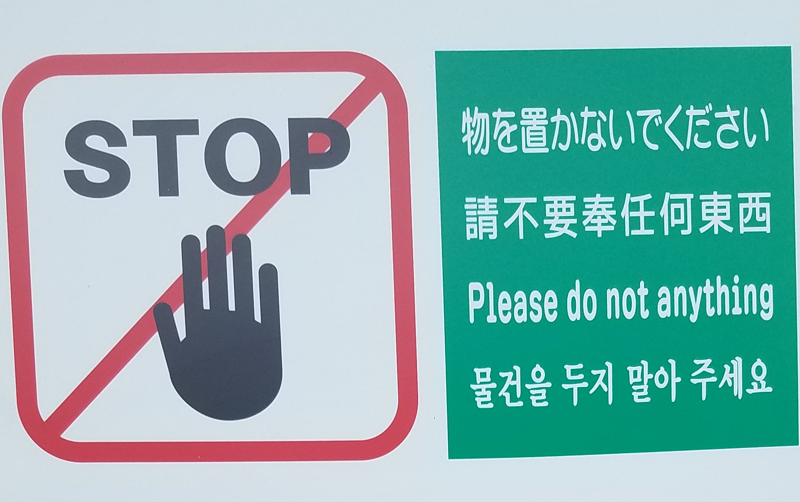

Found in Translation
On a hill in Kyoto, Japan there is a most delightful sign. Near the Kiyomizu Temple temple in the Higashiyama District there are several picturesque streets. The presevered historic district is a favorite place for tourist shopping, tasty snacks, photo opportunities with majestic temples in the background.
Many folks like to rent Kimonos (mostly women, but also a few men) and snap photos in the street. On my way through the district I happened across this wonderful sign attached to a private residence:

In English: Please do not anything
In context the meaning is transparent: Please keep your cosplay off our lawn and don’t touch our stuff.
My wife assures me that the Chinese text is equally garbled if taken literally.
There is a sense the literal English words seem to capture that is related to a captivating story I first recall reading from Garr Reynolds Presentation Zen, reproduced below.
When you talked about reducing the text on the slides, I was reminded of a story from my childhood in India. When Vijay opened his store he put up a sign that said “We Sell Fresh Fish Here.” His father stopped by and said that the word “We” suggests an emphasis on the seller rather than the customer, and is really not needed. So the sign was changed to “Fresh Fish Sold Here.” His brother came by and suggested that the word “here” could be done away with – it was superfluous. doing?" Later, his neighbor stopped by to congratulate him. Then he mentioned that all passers-by could easily tell that the fish was really fresh. Mentioning the word fresh actually made it sound defensive as though there was room for doubt about the freshness. Now the sign just read: “FISH.” As Vijay was walking back to his shop after a break he noticed that one could identify the fish from its smell from very far, at a distance from which one could barely read the sign. He knew there was no need for the word “FISH.”
An empty sign is a metaphor for the type of minimalism I strive for in my work. I’ve joked with my colleagues that the best economic article I could write would be on a blank sheet of paper. Sadly, they haven’t elected to publish that yet.
While I try to obey all signs and posted placards when traveling I couldn’t quite comply 100% with the sign. I did eventually something (not not anything): move away from the sign after snapping a quick photo from a respectful distance.
On illiteracy and design
I’ve spent the past few weeks in Asia. Traveling in Japan, Korea and China gives me an idea of what it’s like to be illiterate. Outside of transit and tourist places I often could read nothing. Fortunately, in most public transit and tourist zones the signage is excellent, often in English, but even without words icons and visual design was easy enough to follow. Throughout Asia the signage in public transportation places seems better than most of what I encounter here in the United States.
There were several interesting design ideas I picked up from my travels. I am looking forward to incoporating some of those ideas into my data visualizations in coming weeks. More on that, and my trip a bit later.